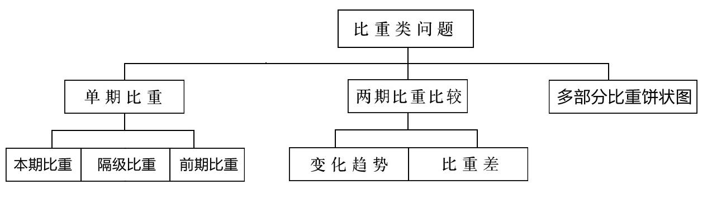
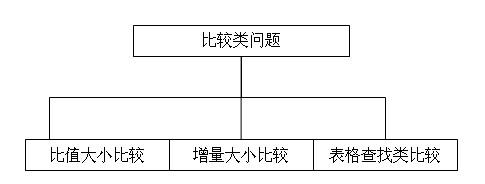

高频考点之 ABRX 类问题
增长量 X 的常用解题技巧
一般来讲X会有两类考法：
一是直接求X，相对比较简单；二是求两个X的关系（或倍数或比值等），此类考法只是将两道第一种考法的题目合并到了一道题中。
求X的题型一般会给出B、R做为已知条件，我们可以根据R的大小选择适用的方法：
当R大于10%并靠近某个分数时，可以选用415份数法；
当R小于10%时，可以选用假设分配法；
当R非常小（一般为小于5%），并且选项的差距很大，我们可以用$ B \times A$ 代替 $ A \times R$ 来求得X。
增长率 R 四种考察方式与对应解法
基本增长率（最基本的考法）：已知条件为本期和前期求R，可用 $ R= { {X} \over {A} } $求解。
隔年增长率：已知条件为两年的增长率$R_1$、$R_2$ 可用$R={R_1}+{R_2}+{R_1R_2}$求解。
比值增长率：增长率是指本期比前期增长的情况，但如果本期和前期均为一个比值(A、B），此类增长率即为比值的增长率问题。
- $比值增长率= { {1+R_1} \over {1+R_2} } -1 = { {R_1-R_2} \over {1+R_2} }$
- $比值倍数= { {1+R_1} \over {1+R_2} }$
乘积增长率：顾名思义，即两个乘数之积的增长率，计算公式与隔年增长率一致。若$A=B \times C$，已知B、C的增长率，要求A的增长率，则$R_A=R_B+R_C+R_BR_C$
前期 A 的考法与解法
一是最基本的考法，直接求前期 A，我们可以根据 R 的大小和选项的差距选择不同的解题方法：若选项相距很近，我们可以选择直除法；若选项有一定差距，我们可以选择直接代入法、415 份数法；
二是求隔年前期，可先求出隔年增长率，即变成第一类考法；
三是前期差值，即需要我们求出两个前期再做差；此类题目求前期时没有选项参考，计算量较大，性价比一般，我们可以先用追及思想粗略判断前期差值的情况，排除不符合选项；若无法秒杀，我们可选用415 份数法、假设分配法、直除法依次求得两个前期。
已知前期 A 求本期 B
此类题型（求 B）考察次数极少，也相对简单，一般只需要套用公式$B＝A＋AR$ 或$ B＝A(1＋R)^n$ 即可。【注】$ B＝A(1＋R)^n$ 为年均增长率公式。
高频考点之比重类相关问题
什么是比重类问题呢？
例：“2010 年某省经济运行高开稳走、持续向好，综合实力明显增强，经初步核算，全省实现地区生产总值 40903.3 亿元，增长 12.6% 。其中，第一、二、三产业增加值分别达到 2539.6 亿元、21753.9 亿元和 16609.8亿元，分别增长 4.3% 、13.0% 和 13.1% 。”
在资料分析模块所给材料中，“整体（变化率）— 各部分（变化率）”这样的表述非常常见，针对整体与各部分在两年间的不同变化，可以设计多种比重类问题：
- 2010 年该省第一产业增加值占地区生产总值的比重是多少？——本期比重
- 2009 年该省第二产业增加值占地区生产总值的比重是多少？——前期比重
- 与 2009 年相比，该省三大产业增加值所占比重有何变化？——比重变化趋势
- 2010 年该省第一产业增加值占地区总值的比重较上年下降多少个百分点？——比重差
比重类问题分类如下：

单期比重之本期比重
某一部分本期比重所用公式：$比重=部分/整体$；$部分=整体\times比重$；$整体=部分/比重$
多部分本期比重所用公式：$部分和（部分差）=整体\times比重和（比重差）$、$比重和（比重差）=部分和（差）/整体$
单期比重之前期比重
前期比重公式：
记忆口诀：前期比重等于本期比重乘以增长率反过来
单期比重之隔级比重
隔级比重，指的是题目中存在大集合、中集合、小集合的关系，所问的是小集合和大集合之间的情况。
例如，学校为大集合，班级为中集合，班级内的女同学为小集合，若问的是班级内的女同学在学校中的比重为为多少，即是隔级比重。
计算公式：
两期比重变化之比重趋势
比重趋势判断规律如下：
分子增速大于分母，则分数变大（比重上升）；分子增速小于分母，则分数变小（比重下降）。
$前期比重=\frac {前期部分}{前期整体}$，先找出 $R_{部分}$ 和 $R_{整体}$，则 $后期比重=\frac {前期部分}{前期整体}\times\frac{1+R_{部分} }{1+R_{整体} }$，
判断 $R_{部分}$ 和 $R_{整体}$ 的大小可以直接判断后期比重和前期比重的大小。
两期比重变化之比重差
| 去年（前期） | 增长率 | 今年（本期） | |
|---|---|---|---|
| 部分 | a | $R_1$ | $A=a(1+R_1)$ |
| 整体 | b | $R_2$ | $B=b(1+R_2)$ |
比重差公式：$比重差=本期比重-前期比重=\frac{前期部分}{本期整体}\times(部分增长率-整体增长率)$
记忆口诀：今年的整体分之去年的部分乘上增长率之差
比重差秒杀计：比重差绝对值小于增速差绝对值
高频考点之盐水相关问题
盐水思想介绍
盐水思想的两个基本原则
- 混合溶液浓度要在两杯溶液浓度之间
- 混合溶液浓度要接近比重大的那杯溶液浓度
盐水思想的计算方法
十字相乘法，适用于求两部分量之比；
1 | 溶液A浓度────────┐ ┌──────── X-B 溶液A质量 溶质 |
1 | 部分1增长率R1────┐ ┌──── R1-R A1 X |
线段法，适用于求 “3R” 之一：
1 | 按数据标点 → 按比例分段 → 按比重选点 → 几何计算 |
考人数，想盐水
盐水类问题的三种常见考察方式
- 一是给出整体与两部分的 3 个 “R”，可用十字相乘法求得两部分的量之比
- 二是给出了两部分的量之比，但求 3 个 “R” 中的某一个，可先用基本原则排除错误选项，再用十字相乘法解题，或者直接使用线段法解题
- 三是时间分段，比较特殊
高频考点之比较类相关问题
比较类问题分类如下：

比值大小比较
双线法
增量大小比较
增量大小比较秒杀计：
第一句：B 越大 R 越大，则 X 越大
第二句：我的 B 是你的 N 被，你的 R 是我的 N 倍以上，我们的 X 才可能相等
图标查找类比较
一是注意起始、结束年份、月份（重中之重）；
二是注意”合计“、”总计“行，以免数进去；
三是注意第一年的增量；
四是注意单位，例如航空运输和公路运输不是一个数量级。
高频考点之平均类问题
一般平均值问题
均前每后（平均每也是每）做分母；时间平均值注意起止时间（月末月初）和平年闰年；$\frac {\frac{A}{B} }{\frac{C}{D} } = \frac {AD}{BC}$
年均增长量
年均增长量：表示的是 n 年间增量的绝对平均值。$年均增量=\frac {本期-基期}n$
年均增长率（需要开方，极少考）
复合平均增长率：$\frac {末期}{基期}=(1+R)^n$
算术平均增长率：$总增长率/n$
特殊考点：拉动增长与贡献率
$拉动增长=部分增量/整体前期$
$增量贡献率=部分增量/整体增量$